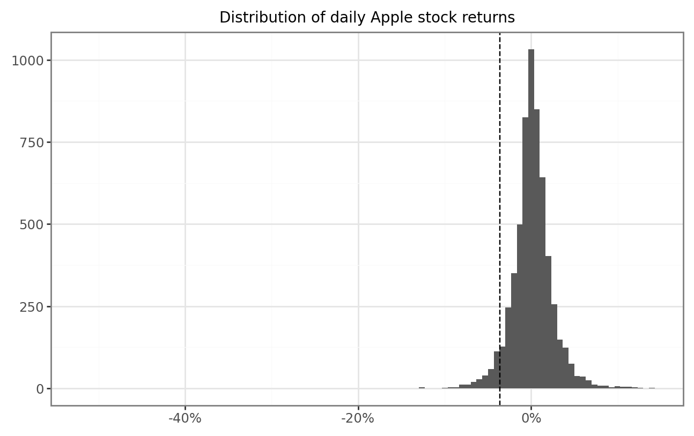
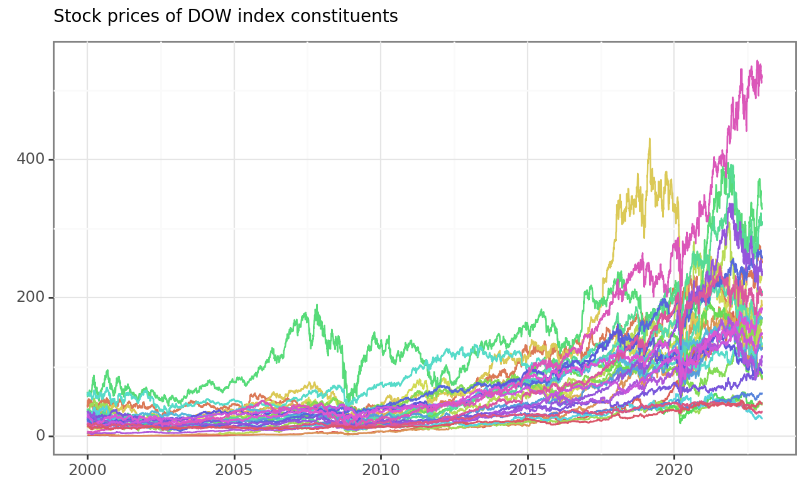
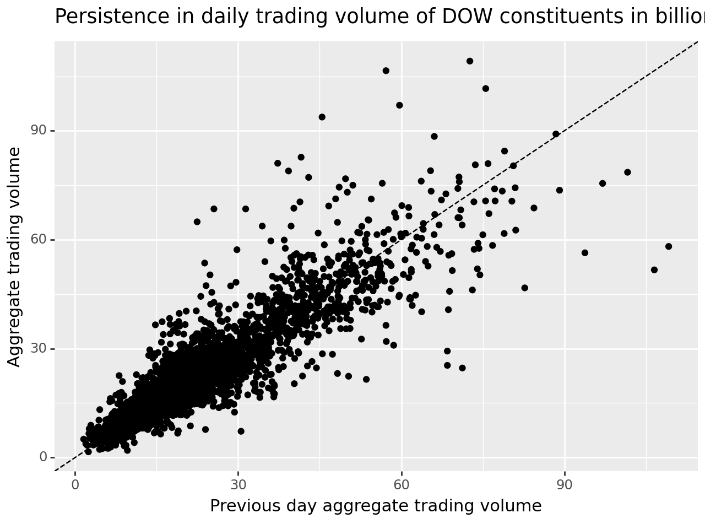
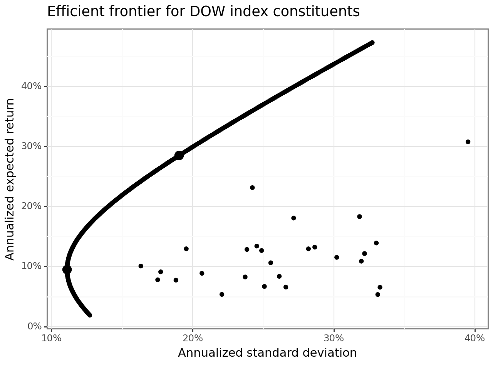

import pandas as pd
import numpy as np
import yfinance as yfIntroduction to Tidy Finance
Note
You are reading the work-in-progress edition of Tidy Finance with Python. Code chunks and text might change over the next couple of months. We are always looking for feedback via contact@tidy-finance.org. Meanwhile, you can find the complete R version here.
The main aim of this chapter is to familiarize yourself with ´pandas´ and ´numpy´, the main workhorses for data analysis in Python. We start by downloading and visualizing stock data from Yahoo!Finance. Then we move to a simple portfolio choice problem and construct the efficient frontier. These examples introduce you to our approach of Tidy Finance.
Working with Stock Market Data
At the start of each session, we load the required packages. Throughout the entire book, we always use pandas and numpy to perform a number of data manipulations. In this chapter, we also load the convenient yfinance package to download price data.
We first download daily prices for one stock symbol, e.g., the Apple stock, AAPL, directly from the data provider Yahoo!Finance. To download the data, you can use the function yf.download().
prices = (yf.download(tickers="AAPL",
start="2000-01-01",
end="2021-12-31")
.reset_index()
.assign(symbol = "AAPL")
.rename(columns = {"Date": "date",
"Open": "open",
"High": "high",
"Low": "low",
"Close": "close",
"Adj Close": "adjusted",
"Volume": "volume"
})
)
prices.head()[*********************100%***********************] 1 of 1 completed| date | open | high | low | close | adjusted | volume | symbol | |
|---|---|---|---|---|---|---|---|---|
| 0 | 2000-01-03 | 0.936384 | 1.004464 | 0.907924 | 0.999442 | 0.849469 | 535796800 | AAPL |
| 1 | 2000-01-04 | 0.966518 | 0.987723 | 0.903460 | 0.915179 | 0.777850 | 512377600 | AAPL |
| 2 | 2000-01-05 | 0.926339 | 0.987165 | 0.919643 | 0.928571 | 0.789232 | 778321600 | AAPL |
| 3 | 2000-01-06 | 0.947545 | 0.955357 | 0.848214 | 0.848214 | 0.720933 | 767972800 | AAPL |
| 4 | 2000-01-07 | 0.861607 | 0.901786 | 0.852679 | 0.888393 | 0.755083 | 460734400 | AAPL |
yf.download() downloads stock market data from Yahoo!Finance if you do not specify another data source. The above code chunk returns a data frame with eight quite self-explanatory columns: date, the market prices at the open, high, low, and close, the adjusted price in USD, the daily volume (in the number of traded shares), and the symbol. The adjusted prices are corrected for anything that might affect the stock price after the market closes, e.g., stock splits and dividends. These actions affect the quoted prices, but they have no direct impact on the investors who hold the stock. Therefore, we often rely on adjusted prices when it comes to analyzing the returns an investor would have earned by holding the stock continuously.
Next, we use the plotnine package to visualize the time series of adjusted prices in Figure 1 . This package takes care of visualization tasks based on the principles of the grammar of graphics (Wilkinson 2012).
from plotnine import *
prices_figure = (ggplot(prices, aes(y="adjusted",
x="date"))
+ geom_line()
+ labs(x="", y="",
title="Apple stock prices between beginning of 2000 and end of 2021")
)
prices_figure.draw()
Instead of analyzing prices, we compute daily net returns defined as \(r_t = p_t / p_{t-1} - 1\), where \(p_t\) is the adjusted day \(t\) price. In that context, the function pct_change() is helpful because it computes this percentage change.
returns = (prices
.sort_values("date")
.assign(ret = lambda x: x["adjusted"].pct_change())
.get(["symbol", "date", "ret"])
)
returns.head()| symbol | date | ret | |
|---|---|---|---|
| 0 | AAPL | 2000-01-03 | NaN |
| 1 | AAPL | 2000-01-04 | -0.084310 |
| 2 | AAPL | 2000-01-05 | 0.014633 |
| 3 | AAPL | 2000-01-06 | -0.086539 |
| 4 | AAPL | 2000-01-07 | 0.047369 |
The resulting data frame contains three columns, where the last contains the daily returns (ret). Note that the first entry naturally contains a missing value (NaN) because there is no previous price. Obviously, the use of pct_change() would be meaningless if the time series is not ordered by ascending dates. The function sort_values() provides a convenient way to order observations in the correct way for our application. In case you want to order observations by descending dates, you can use the parameter ascending=False.
For the upcoming examples, we remove missing values as these would require separate treatment when computing, e.g., sample averages. In general, however, make sure you understand why NA values occur and carefully examine if you can simply get rid of these observations.
returns = returns.dropna() Next, we visualize the distribution of daily returns in a histogram in Figure 2. Additionally, we add a dashed line that indicates the 5 percent quantile of the daily returns to the histogram, which is a (crude) proxy for the worst return of the stock with a probability of at most 5 percent. The 5 percent quantile is closely connected to the (historical) value-at-risk, a risk measure commonly monitored by regulators. We refer to Tsay (2010) for a more thorough introduction to stylized facts of returns.
from mizani.formatters import percent_format
quantile_05 = returns["ret"].quantile(0.05)
returns_figure = (ggplot(returns, aes(x="ret"))
+ geom_histogram(bins=100)
+ geom_vline(aes(xintercept=quantile_05), linetype="dashed")
+ labs(x=None, y=None,
title="Distribution of daily Apple stock returns")
+ scale_x_continuous(labels=percent_format())
)
returns_figure.draw()
Here, bins = 100 determines the number of bins used in the illustration and hence implicitly the width of the bins. Before proceeding, make sure you understand how to use the geom geom_vline() to add a dashed line that indicates the 5 percent quantile of the daily returns. A typical task before proceeding with any data is to compute summary statistics for the main variables of interest.
returns["ret"].describe()count 5534.000000
mean 0.001297
std 0.025237
min -0.518692
25% -0.010100
50% 0.000942
75% 0.013111
max 0.139049
Name: ret, dtype: float64We see that the maximum daily return was {python} round(returns["ret"].max() * 100, 3) percent. Perhaps not surprisingly, the average daily return is close to but slightly above 0. In line with the illustration above, the large losses on the day with the minimum returns indicate a strong asymmetry in the distribution of returns.
You can also compute these summary statistics for each year individually by imposing .groupby(returns["date"].dt.year), where the call .dt.year returns the year of a date variable. More specifically, the few lines of code below compute the summary statistics from above for individual groups of data defined by year. The summary statistics, therefore, allow an eyeball analysis of the time-series dynamics of the return distribution.
returns["ret"].groupby(returns["date"].dt.year).describe()| count | mean | std | min | 25% | 50% | 75% | max | |
|---|---|---|---|---|---|---|---|---|
| date | ||||||||
| 2000 | 251.0 | -0.003457 | 0.054940 | -0.518692 | -0.034425 | -0.001702 | 0.027153 | 0.136858 |
| 2001 | 248.0 | 0.002329 | 0.039338 | -0.171712 | -0.022873 | -0.001162 | 0.026942 | 0.128567 |
| 2002 | 252.0 | -0.001212 | 0.030526 | -0.150372 | -0.018749 | -0.002787 | 0.017930 | 0.084558 |
| 2003 | 252.0 | 0.001857 | 0.023360 | -0.081421 | -0.012068 | 0.001549 | 0.014642 | 0.113492 |
| 2004 | 252.0 | 0.004702 | 0.025470 | -0.055785 | -0.009004 | 0.002835 | 0.015525 | 0.131573 |
| 2005 | 252.0 | 0.003490 | 0.024478 | -0.092105 | -0.010068 | 0.003440 | 0.016910 | 0.091168 |
| 2006 | 251.0 | 0.000949 | 0.024265 | -0.063326 | -0.014082 | -0.001525 | 0.014302 | 0.118299 |
| 2007 | 251.0 | 0.003664 | 0.023757 | -0.070206 | -0.008942 | 0.002557 | 0.017957 | 0.105359 |
| 2008 | 253.0 | -0.002646 | 0.036666 | -0.179195 | -0.023983 | -0.001043 | 0.018687 | 0.139049 |
| 2009 | 252.0 | 0.003819 | 0.021369 | -0.050164 | -0.008984 | 0.002112 | 0.015498 | 0.067592 |
| 2010 | 252.0 | 0.001832 | 0.016856 | -0.049598 | -0.006217 | 0.002332 | 0.011379 | 0.076867 |
| 2011 | 252.0 | 0.001040 | 0.016539 | -0.055940 | -0.009266 | 0.001067 | 0.011128 | 0.058888 |
| 2012 | 250.0 | 0.001299 | 0.018566 | -0.064357 | -0.007969 | 0.000473 | 0.011957 | 0.088741 |
| 2013 | 252.0 | 0.000472 | 0.017987 | -0.123558 | -0.008709 | -0.000278 | 0.010901 | 0.051361 |
| 2014 | 252.0 | 0.001447 | 0.013643 | -0.079928 | -0.005763 | 0.001042 | 0.009585 | 0.081982 |
| 2015 | 252.0 | 0.000020 | 0.016843 | -0.061163 | -0.008595 | -0.000630 | 0.009395 | 0.057355 |
| 2016 | 252.0 | 0.000575 | 0.014702 | -0.065706 | -0.005742 | 0.000873 | 0.007724 | 0.064963 |
| 2017 | 251.0 | 0.001637 | 0.011091 | -0.038777 | -0.003720 | 0.000667 | 0.006761 | 0.060981 |
| 2018 | 251.0 | -0.000057 | 0.018106 | -0.066331 | -0.008958 | 0.000524 | 0.009429 | 0.070421 |
| 2019 | 252.0 | 0.002665 | 0.016466 | -0.099607 | -0.004797 | 0.002753 | 0.011551 | 0.068335 |
| 2020 | 253.0 | 0.002807 | 0.029387 | -0.128647 | -0.010259 | 0.001749 | 0.017396 | 0.119808 |
| 2021 | 251.0 | 0.001325 | 0.015841 | -0.041674 | -0.007655 | 0.001474 | 0.012455 | 0.053851 |
Scaling Up the Analysis
As a next step, we generalize the code from before such that all the computations can handle an arbitrary vector of stock symbols (e.g., all constituents of an index). Following tidy principles, it is quite easy to download the data, plot the price time series, and tabulate the summary statistics for an arbitrary number of assets.
This is where the magic starts: tidy data makes it extremely easy to generalize the computations from before to as many assets as you like. The following code takes any vector of symbols, e.g., symbol = ["AAPL", "MMM", "BA"], and automates the download as well as the plot of the price time series. In the end, we create the table of summary statistics for an arbitrary number of assets. We perform the analysis with data from all current constituents of the Dow Jones Industrial Average index.
We first download a table with DOW Jones constituents from an external website.
url = ("https://www.ssga.com/us/en/institutional/etfs/library-content/"
"products/fund-data/etfs/us/holdings-daily-us-en-dia.xlsx")
symbols = (pd.read_excel(url, skiprows=4, nrows=30)
.get("Ticker")
.tolist()
)Next, we can use yf.download() to download prices for all stock symbols in the above list.
index_prices = (yf.download(tickers=symbols,
start="2000-01-01",
end="2021-12-31",
progress=False)
.melt(ignore_index=False,
var_name=["variable", "symbol"])
.reset_index()
.pivot(index=["Date", "symbol"],
columns="variable",
values="value")
.reset_index()
.rename(columns = {"Date": "date",
"Open": "open",
"High": "high",
"Low": "low",
"Close": "close",
"Adj Close": "adjusted",
"Volume": "volume"
})
)The resulting data frame contains {python} len(index_prices) daily observations for {python} len(index_prices["symbol"].unique()) different stock symbols. Figure 3 illustrates the time series of downloaded adjusted prices for each of the constituents of the Dow Jones index. Make sure you understand every single line of code! (What are the arguments of aes()? Which alternative geoms could you use to visualize the time series? Hint: if you do not know the answers try to change the code to see what difference your intervention causes.
index_prices_figure = (ggplot(index_prices,
aes(y="adjusted",
x="date",
color="symbol"))
+ geom_line()
+ labs(x="", y="", color="",
title="Stock prices of DOW index constituents")
+ theme(legend_position="none")
)
index_prices_figure.draw()
Do you notice the small differences relative to the code we used before? yf.download(symbols) returns a data frame for several symbols as well. All we need to do to illustrate all symbols simultaneously is to include color = symbol in the ggplot2 aesthetics. In this way, we generate a separate line for each symbol. Of course, there are simply too many lines on this graph to identify the individual stocks properly, but it illustrates the point well.
The same holds for stock returns. Before computing the returns, we use groupby("symbol") such that the assign() command is performed for each symbol individually. The same logic also applies to the computation of summary statistics: groupby("symbol") is the key to aggregating the time series into symbol-specific variables of interest.
all_returns = (index_prices
.assign(ret = lambda x: x.groupby("symbol")["adjusted"].pct_change())
.get(["symbol", "date", "ret"])
.dropna(subset="ret")
)
all_returns.groupby("symbol")["ret"].describe()| count | mean | std | min | 25% | 50% | 75% | max | |
|---|---|---|---|---|---|---|---|---|
| symbol | ||||||||
| AAPL | 5534.0 | 0.001297 | 0.025237 | -0.518692 | -0.010100 | 0.000941 | 0.013111 | 0.139050 |
| AMGN | 5534.0 | 0.000475 | 0.019886 | -0.134124 | -0.008830 | 0.000077 | 0.009601 | 0.151021 |
| AXP | 5534.0 | 0.000547 | 0.022962 | -0.175950 | -0.008379 | 0.000396 | 0.009700 | 0.218822 |
| BA | 5534.0 | 0.000614 | 0.021992 | -0.238484 | -0.009625 | 0.000574 | 0.010878 | 0.243186 |
| CAT | 5534.0 | 0.000699 | 0.020360 | -0.145175 | -0.009527 | 0.000487 | 0.010996 | 0.147230 |
| CRM | 4412.0 | 0.001283 | 0.026786 | -0.271482 | -0.011358 | 0.000566 | 0.013425 | 0.260449 |
| CSCO | 5534.0 | 0.000370 | 0.023922 | -0.162107 | -0.009009 | 0.000490 | 0.010301 | 0.243884 |
| CVX | 5534.0 | 0.000486 | 0.017494 | -0.221248 | -0.007891 | 0.000753 | 0.008919 | 0.227407 |
| DIS | 5534.0 | 0.000531 | 0.019293 | -0.183630 | -0.008368 | 0.000366 | 0.008986 | 0.159722 |
| DOW | 702.0 | 0.000799 | 0.028071 | -0.216577 | -0.012512 | 0.000571 | 0.015287 | 0.209091 |
| GS | 5534.0 | 0.000584 | 0.023326 | -0.189596 | -0.010114 | 0.000350 | 0.011161 | 0.264678 |
| HD | 5534.0 | 0.000601 | 0.019350 | -0.287356 | -0.008041 | 0.000544 | 0.009190 | 0.140665 |
| HON | 5534.0 | 0.000523 | 0.019516 | -0.173669 | -0.008009 | 0.000560 | 0.008897 | 0.282230 |
| IBM | 5534.0 | 0.000262 | 0.016600 | -0.155420 | -0.007070 | 0.000287 | 0.007666 | 0.120233 |
| INTC | 5534.0 | 0.000400 | 0.023587 | -0.220330 | -0.010305 | 0.000466 | 0.011279 | 0.201229 |
| JNJ | 5534.0 | 0.000415 | 0.012260 | -0.158456 | -0.005089 | 0.000309 | 0.006093 | 0.122292 |
| JPM | 5534.0 | 0.000625 | 0.024423 | -0.207275 | -0.008938 | 0.000232 | 0.009873 | 0.250968 |
| KO | 5534.0 | 0.000329 | 0.013261 | -0.100609 | -0.005468 | 0.000431 | 0.006345 | 0.138796 |
| MCD | 5534.0 | 0.000553 | 0.014825 | -0.158754 | -0.006189 | 0.000742 | 0.007322 | 0.181255 |
| MMM | 5534.0 | 0.000452 | 0.014939 | -0.129450 | -0.006285 | 0.000540 | 0.007535 | 0.125986 |
| MRK | 5534.0 | 0.000325 | 0.016950 | -0.267806 | -0.007439 | 0.000245 | 0.008444 | 0.130329 |
| MSFT | 5534.0 | 0.000587 | 0.019251 | -0.155978 | -0.008024 | 0.000359 | 0.009221 | 0.195652 |
| NKE | 5534.0 | 0.000824 | 0.019003 | -0.198127 | -0.007891 | 0.000592 | 0.009230 | 0.155314 |
| PG | 5534.0 | 0.000398 | 0.013377 | -0.302358 | -0.005203 | 0.000371 | 0.006140 | 0.120090 |
| TRV | 5534.0 | 0.000554 | 0.018488 | -0.208004 | -0.007306 | 0.000630 | 0.008269 | 0.255555 |
| UNH | 5534.0 | 0.001012 | 0.019964 | -0.186362 | -0.008072 | 0.000810 | 0.009909 | 0.347550 |
| V | 3471.0 | 0.000995 | 0.018948 | -0.136434 | -0.007636 | 0.001223 | 0.009523 | 0.149974 |
| VZ | 5534.0 | 0.000287 | 0.015149 | -0.118462 | -0.007086 | 0.000212 | 0.007449 | 0.146324 |
| WBA | 5534.0 | 0.000340 | 0.018121 | -0.149873 | -0.008526 | 0.000000 | 0.009254 | 0.166355 |
| WMT | 5534.0 | 0.000321 | 0.014925 | -0.101833 | -0.006663 | 0.000276 | 0.006919 | 0.117085 |
Other Forms of Data Aggregation
Of course, aggregation across variables other than symbol can also make sense. For instance, suppose you are interested in answering the question: are days with high aggregate trading volume likely followed by days with high aggregate trading volume? To provide some initial analysis on this question, we take the downloaded data and compute aggregate daily trading volume for all Dow Jones constituents in USD. Recall that the column volume is denoted in the number of traded shares. Thus, we multiply the trading volume with the daily adjusted closing price to get a proxy for the aggregate trading volume in USD. Scaling by 1e9 (Python can handle scientific notation) denotes daily trading volume in billion USD.
trading_volume = (index_prices
.assign(trading_volume = lambda x: (x["volume"] * x["adjusted"]) / 1e9)
.groupby("date")["trading_volume"]
.sum()
.reset_index()
.assign(trading_volume_lag = lambda x: x["trading_volume"].shift())
)
trading_volume_figure = (ggplot(trading_volume,
aes(x="date",
y="trading_volume"))
+ geom_line()
+ labs(x="",
y="",
title="Aggregate daily trading volume of "
"DOW index constituents in billion USD")
)
trading_volume_figure.draw()
Figure 4 indicates a clear upward trend in aggregated daily trading volume. In particular, since the outbreak of the COVID-19 pandemic, markets have processed substantial trading volumes, as analyzed, for instance, by Goldstein, Koijen, and Mueller (2021). One way to illustrate the persistence of trading volume would be to plot volume on day \(t\) against volume on day \(t-1\) as in the example below. In Figure 5, we add a dotted 45°-line to indicate a hypothetical one-to-one relation by geom_abline(), addressing potential differences in the axes’ scales.
trading_volume_figure = (ggplot(trading_volume,
aes(x="trading_volume_lag",
y="trading_volume"))
+ geom_point()
+ geom_abline(aes(intercept=0, slope=1),
linetype="dashed")
+ labs(x="Previous day aggregate trading volume",
y="Aggregate trading volume",
title="Persistence in daily trading volume of DOW constituents "
"in billion USD")
)
trading_volume_figure.draw()
Portfolio Choice Problems
In the previous part, we show how to download stock market data and inspect it with graphs and summary statistics. Now, we move to a typical question in Finance: how to allocate wealth across different assets optimally. The standard framework for optimal portfolio selection considers investors that prefer higher future returns but dislike future return volatility (defined as the square root of the return variance): the mean-variance investor (Markowitz 1952).
An essential tool to evaluate portfolios in the mean-variance context is the efficient frontier, the set of portfolios which satisfies the condition that no other portfolio exists with a higher expected return but with the same volatility (the square root of the variance, i.e., the risk), see, e.g., Merton (1972). We compute and visualize the efficient frontier for several stocks. First, we extract each asset’s monthly returns. In order to keep things simple, we work with a balanced panel and exclude DOW constituents for which we do not observe a price on every single trading day since the year 2000.
prices = (index_prices
.groupby("symbol")
.apply(lambda x: x.assign(counts = x["adjusted"].dropna().count()))
.reset_index(drop=True)
.query("counts == counts.max()")
)Next, we transform the returns from a tidy data frame into a \((T \times N)\) matrix with one column for each of the \(N\) symbols and one row for each of the \(T\) trading days to compute the sample average return vector \[\hat\mu = \frac{1}{T}\sum\limits_{t=1}^T r_t\] where \(r_t\) is the \(N\) vector of returns on date \(t\) and the sample covariance matrix \[\hat\Sigma = \frac{1}{T-1}\sum\limits_{t=1}^T (r_t - \hat\mu)(r_t - \hat\mu)'.\] We achieve this by using pivot() with the new column names from the column symbol and setting the values to adjusted. We compute the vector of sample average returns and the sample variance-covariance matrix, which we consider as proxies for the parameters of the distribution of future stock returns. Thus, for simplicity, we refer to \(\Sigma\) and \(\mu\) instead of explicitly highlighting that the sample moments are estimates. In later chapters, we discuss the issues that arise once we take estimation uncertainty into account.
returns_matrix = (prices
.pivot(columns="symbol",
values="adjusted",
index="date")
.resample("m")
.last()
.pct_change()
.dropna()
)
length_year = 12
mu = np.array(returns_matrix.mean()).T * length_year
sigma = np.array(returns_matrix.cov()) * length_yearThen, we compute the minimum variance portfolio weights \(\omega_\text{mvp}\) as well as the expected portfolio return \(\omega_\text{mvp}'\mu\) and volatility \(\sqrt{\omega_\text{mvp}'\Sigma\omega_\text{mvp}}\) of this portfolio. Recall that the minimum variance portfolio is the vector of portfolio weights that are the solution to \[\omega_\text{mvp} = \arg\min \omega'\Sigma \omega \text{ s.t. } \sum\limits_{i=1}^N\omega_i = 1.\] The constraint that weights sum up to one simply implies that all funds are distributed across the available asset universe, i.e., there is no possibility to retain cash. It is easy to show analytically that \(\omega_\text{mvp} = \frac{\Sigma^{-1}\iota}{\iota'\Sigma^{-1}\iota}\), where \(\iota\) is a vector of ones and \(\Sigma^{-1}\) is the inverse of \(\Sigma\).
N = returns_matrix.shape[1]
iota = np.ones(N)
sigma_inv = np.linalg.inv(sigma)
mvp_weights = sigma_inv @ iota
mvp_weights /= mvp_weights.sum()
mvp_return = (mu.T @ mvp_weights)
mvp_volatility = np.sqrt(mvp_weights.T @ sigma @ mvp_weights)
mvp_moments = pd.DataFrame([mvp_return, mvp_volatility],
index=["average_ret", "volatility"]).TThe command np.linalg.inv() returns the solution of a system of equations \(Ax = b\). If b is not provided, as in the example above, it defaults to the identity matrix such that np.linalg.inv(sigma) delivers \(\Sigma^{-1}\) (if a unique solution exists).
Note that the monthly volatility of the minimum variance portfolio is of the same order of magnitude as the daily standard deviation of the individual components. Thus, the diversification benefits in terms of risk reduction are tremendous!
Next, we set out to find the weights for a portfolio that achieves, as an example, three times the expected return of the minimum variance portfolio. However, mean-variance investors are not interested in any portfolio that achieves the required return but rather in the efficient portfolio, i.e., the portfolio with the lowest standard deviation. If you wonder where the solution \(\omega_\text{eff}\) comes from: The efficient portfolio is chosen by an investor who aims to achieve minimum variance given a minimum acceptable expected return \(\bar{\mu}\). Hence, their objective function is to choose \(\omega_\text{eff}\) as the solution to \[\omega_\text{eff}(\bar{\mu}) = \arg\min \omega'\Sigma \omega \text{ s.t. } \omega'\iota = 1 \text{ and } \omega'\mu \geq \bar{\mu}.\]
The code below implements the analytic solution to this optimization problem for a benchmark return \(\bar\mu\), which we set to 3 times the expected return of the minimum variance portfolio. We encourage you to verify that it is correct.
benchmark_multiple = 3
mu_bar = benchmark_multiple * mvp_return
C = iota.T @ sigma_inv @ iota
D = iota.T @ sigma_inv @ mu
E = mu.T @ sigma_inv @ mu
lambda_tilde = 2 * (mu_bar - D / C) / (E - D ** 2 / C)
efp_weights = (mvp_weights + lambda_tilde / 2 *
(sigma_inv @ mu - D * mvp_weights))The Efficient Frontier
The mutual fund separation theorem states that as soon as we have two efficient portfolios (such as the minimum variance portfolio \(\omega_\text{mvp}\) and the efficient portfolio for a higher required level of expected returns \(\omega_\text{eff}(\bar{\mu})\), we can characterize the entire efficient frontier by combining these two portfolios. That is, any linear combination of the two portfolio weights will again represent an efficient portfolio. The code below implements the construction of the efficient frontier, which characterizes the highest expected return achievable at each level of risk. To understand the code better, make sure to familiarize yourself with the inner workings of the for loop.
a = np.arange(-0.4, 2.0, 0.01)
res = pd.DataFrame(columns=["mu", "sd"], index=a).astype(float)
for i in a:
w = (1 - i) * mvp_weights + i * efp_weights
res.loc[i, "mu"] = (w.T @ mu)
res.loc[i, "sd"] = np.sqrt(w.T @ sigma @ w)The code above proceeds in two steps: First, we compute a vector of combination weights \(a\) and then we evaluate the resulting linear combination with \(a\in\mathbb{python}\):
\[\omega^* = a\omega_\text{eff}(\bar\mu) + (1-a)\omega_\text{mvp} = \omega_\text{mvp} + \frac{\lambda^*}{2}\left(\Sigma^{-1}\mu -\frac{D}{C}\Sigma^{-1}\iota \right)\] with \(\lambda^* = 2\frac{a\bar\mu + (1-a)\tilde\mu - D/C}{E-D^2/C}\) where \(C = \iota'\Sigma^{-1}\iota\), \(D=\iota'\Sigma^{-1}\mu\), and \(E=\mu'\Sigma^{-1}\mu\). Finally, it is simple to visualize the efficient frontier alongside the two efficient portfolios within one powerful figure using ggplot2 (see Figure 6). We also add the individual stocks in the same call. We compute annualized returns based on the simple assumption that monthly returns are independent and identically distributed. Thus, the average annualized return is just 12 times the expected monthly return.
mvp_return = (mu.T @ mvp_weights)
mvp_volatility = np.sqrt(mvp_weights.T @ sigma @ mvp_weights)
efp_return = mu_bar
efp_volatility = np.sqrt(efp_weights.T @ sigma @ efp_weights)
res_figure = (ggplot(res, aes(x="sd",
y="mu"))
+ geom_point()
+ geom_point(pd.DataFrame({"mu": [mvp_return, efp_return],
"sd": [mvp_volatility, efp_volatility]}),
size=4)
+ geom_point(pd.DataFrame({"mu": mu,
"sd": np.sqrt(np.diag(sigma))}))
+ labs(x="Annualized standard deviation",
y="Annualized expected return",
title="Efficient frontier for DOW index constituents")
+ scale_x_continuous(labels=percent_format())
+ scale_y_continuous(labels=percent_format())
)
res_figure.draw()
The line in Figure 6 indicates the efficient frontier: the set of portfolios a mean-variance efficient investor would choose from. Compare the performance relative to the individual assets (the dots) - it should become clear that diversifying yields massive performance gains (at least as long as we take the parameters \(\Sigma\) and \(\mu\) as given).
Exercises
- Download daily prices for another stock market symbols of your choice from Yahoo!Finance with
yf.download()from theyfinancepackage. Plot two time series of the symbol’s un-adjusted and adjusted closing prices. Explain the differences. - Compute daily net returns for the asset and visualize the distribution of daily returns in a histogram. Also, use
geom_vline()to add a dashed line that indicates the 5 percent quantile of the daily returns within the histogram. Compute summary statistics (mean, standard deviation, minimum and maximum) for the daily returns - Take your code from before and generalize it such that you can perform all the computations for an arbitrary vector of symbols (e.g.,
symbol <- ["AAPL", "MMM", "BA"]). Automate the download, the plot of the price time series, and create a table of return summary statistics for this arbitrary number of assets. - Consider the research question: Are days with high aggregate trading volume often also days with large absolute price changes? Find an appropriate visualization to analyze the question.
- Compute monthly returns from the downloaded stock market prices. Compute the vector of historical average returns and the sample variance-covariance matrix. Compute the minimum variance portfolio weights and the portfolio volatility and average returns. Visualize the mean-variance efficient frontier. Choose one of your assets and identify the portfolio which yields the same historical volatility but achieves the highest possible average return.
- In the portfolio choice analysis, we restricted our sample to all assets trading every day since 2000. How is such a decision a problem when you want to infer future expected portfolio performance from the results?
- The efficient frontier characterizes the portfolios with the highest expected return for different levels of risk, i.e., standard deviation. Identify the portfolio with the highest expected return per standard deviation. Hint: the ratio of expected return to standard deviation is an important concept in Finance.
References
Goldstein, Itay, Ralph S J Koijen, and Holger M. Mueller. 2021. “COVID-19 and its impact on financial markets and the real economy.” Review of Financial Studies 34 (11): 5135–48. https://doi.org/10.1093/rfs/hhab085.
Markowitz, Harry. 1952. “Portfolio selection.” The Journal of Finance 7 (1): 77–91. https://doi.org/10.1111/j.1540-6261.1952.tb01525.x.
Merton, Robert C. 1972. “An analytic derivation of the efficient portfolio frontier.” Journal of Financial and Quantitative Analysis 7 (4): 1851–72. https://doi.org/10.2307/2329621.
Tsay, Ruey S. 2010. Analysis of financial time series. John Wiley & Sons.
Wilkinson, Leland. 2012. The grammar of graphics. Springer.